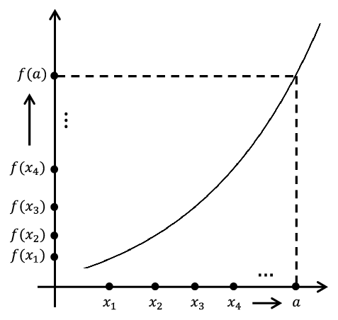
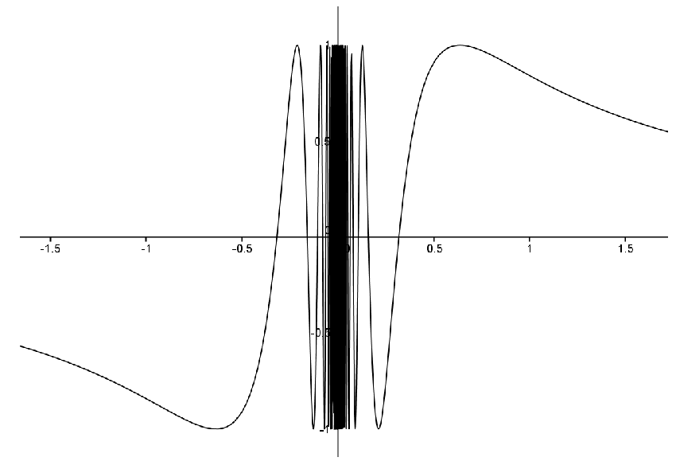
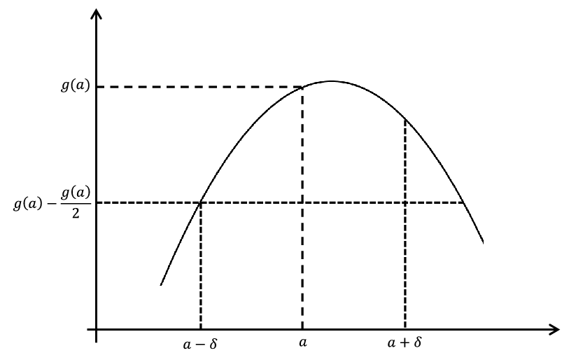

Section 8.2 Sequences and Continuity
There is an alternative way to prove that the function
\begin{equation*}
D(x)=\left\{ \begin{matrix}x\text{,} \amp \text{ if } x\text{ is rational } \\ 0\text{,} \amp \text{ if } x\text{ is irrational } \end{matrix} \right.
\end{equation*}
is not continuous at \(a\neq 0\text{.}\) We will examine this by looking at the relationship between our definitions of convergence and continuity. The two ideas are actually quite closely connected, as illustrated by the following very useful theorem.
Theorem 8.2.1.
The function \(f\) is continuous at \(a\) if and only if \(f\) satisfies the following property:
\begin{equation*}
\forall\text{ sequences } \left(x_n\right)\text{, if }
\,\,\limit{n}{\infty}{x_n}=a \text{ then} \limit{n}{\infty}{f(x_n)}=f(a).
\end{equation*}
Theorem 8.2.1 says that in order for
\(f\) to be continuous, it is necessary and sufficient that any sequence
\(\left(x_n\right)\) converging to
\(a\) must force the sequence
\(\left(f(x_n)\right)\) to converge to
\(f(a)\text{.}\) A picture of this situation is below though, as always, the formal proof will not rely on the diagram.

This theorem is especially useful for showing that a function
\(f,\) is not continuous at a point
\(a\text{.}\) All we need to do is exhibit a sequence
\(\left(x_n\right)\) converging to
\(a\) such that the sequence
\(\limit{n}{\infty}{f(x_n)}\) does
not converge to
\(f(a)\text{.}\) Let’s demonstrate this idea before we tackle the proof of
Theorem 8.2.1.
Example 8.2.2.
\begin{equation*}
f(x)= \begin{cases}\frac{|x|}{x}\text{,} \amp \text{ if } x\neq 0\\ 0\text{,} \amp \text{ if } x=0 \end{cases}
\end{equation*}
is not continuous at \(0\text{.}\)
Proof.
First notice that \(f\) can be written as
\begin{equation*}
f(x)= \begin{cases}1\amp \text{ if } x>0\\ -1\amp \text{ if } x\lt 0\\ 0\amp \text{ if } x=0 \end{cases} \text{.}
\end{equation*}
To show that
\(f\) is not continuous at
\(0\text{,}\) all we need to do is create a single sequence
\(\left(x_n\right)\) which converges to
\(0\text{,}\) but for which the sequence
\(\left(f\left(x_n\right)\right)\) does not converge to
\(f(0)=0\text{.}\) For a function like this one, just about any sequence will do, but let’s use
\(\left(\frac{1}{n}\right)\text{,}\) just because it is an old familiar friend.
We have
\(\limit{n}{\infty}{\frac{1}{n}}=0\text{,}\) but
\(\limit{n}{\infty}{f\left(\frac{1}{n}\right)}=\limit{n}{
\infty}{1}=1\neq 0=f(0)\text{.}\) Thus by
Theorem 8.2.1,
\(f\) is not continuous at
\(0\text{.}\)
Problem 8.2.3.
\begin{equation*}
f(x)= \begin{cases}
\frac{\abs{x}}{x},\amp \text{ if } x\neq 0\\
a, \amp \text{ if } x=0 \end{cases}
\end{equation*}
is not continuous at \(0\text{,}\) no matter what value \(a\) is.
Problem 8.2.4.
\begin{equation*}
D(x)= \begin{cases}
x, \amp \text{ if } x\text{ is rational } \\
0, \amp \text{ if } x\text{ is irrational } \end{cases}
\end{equation*}
is continuous at \(a= 0\text{.}\)
Problem 8.2.5. Topologist’s Sine Curve.
The function
\(\hat{T}(x)=\sin\left(\frac{1}{x}\right)\) is often called the topologist’s sine curve. Whereas
\(\sin
x\) has roots at
\(n\pi\text{,}\) \(n\in\ZZ\) and oscillates infinitely often as
\(x\rightarrow\pm\infty\text{,}\) \(\hat{T}\) has roots at
\(\frac{1}{n\pi},\,n\in\ZZ,\,n\neq
0\text{,}\) and oscillates infinitely often as
\(x\) approaches zero. A rendition of the graph follows.

Notice that \(\hat{T}\) is not even defined at \(x=0\text{.}\) We can extend \(\hat{T}\) to be defined at \(0\) by simply choosing a value at \(0\text{.}\) Since this will be a new function we give it a new name.
\begin{equation*}
T(x)= \begin{cases}
\sin\left(\frac{1}{x}\right),\amp \text{ if } x\neq 0\\
b,\amp \text{ if } x=0 \end{cases} \text{.}
\end{equation*}
Use
Theorem 8.2.1 to show that
\(T\) is not continuous at
\(0\text{,}\) no matter what value is chosen for
\(b\text{.}\)
Sketch of the Proof of Theorem 8.2.1.
We’ve seen how we can use
Theorem 8.2.1, now we need to prove it.
The forward direction is fairly straightforward. We assume that \(f\) is continuous at \(a\) and start with a sequence \(\left(x_n\right)\) which converges to \(a\text{.}\) We now need to show is that
\begin{equation*}
\limit{n}{\infty}{f(x_n)}=f(a)\text{,}
\end{equation*}
but that will follow from the definitions of
-
continuity at \(a\text{,}\)
-
\(\limit{n}{\infty}{x_n}=a\text{,}\) and
-
\(\limit{n}{\infty}{f(x_n)}=f(a)\text{.}\)
To prove the converse, it is convenient to prove its contrapositive. That is, we want to prove that if
\(f\) is not continuous at
\(a\) then we can construct a sequence
\(\left(x_n\right)\) that converges to
\(a\) but
\(\left(f(x_n)\right)\) does not converge to
\(f(a)\text{.}\)
First we need to recognize what it means for \(f\) to not be continuous at \(a\text{.}\) It means that somewhere there exists an \(\eps>0\text{,}\) such that no choice of \(\delta>0\) will work for that \(\eps\text{.}\) More formally, for any such \(\delta\text{,}\) there will exist \(x\text{,}\) such that
\begin{equation*}
\abs{x-a}\lt \delta,\text{ but
}\abs{f(x)-f(a)}\geq\eps.
\end{equation*}
This means that if
\(\delta=1\text{,}\) then there will exist an
\(x_1\) such that
\(|\,x_1-a|\lt 1\text{,}\) but
\(|f(x_1)-f(a)|\geq\eps\text{.}\) Similarly, if
\(\delta=\frac{1}{2}\text{,}\) then there will exist an
\(x_2\) such that
\(|\,x_2-a|\lt \frac{1}{2}\text{,}\) but
\(|\,f(x_2)-f(a)|\geq\eps\text{.}\) If we continue in this fashion, we will create a sequence
\(\left(x_n\right)\) such that
\(|\,x_n-a|\lt \frac{1}{n}\text{,}\) but
\(|f(x_n)-f(a)|\geq\eps\text{.}\) This should do the trick.
Problem 8.2.6.
Turn the ideas of the previous two paragraphs into a formal proof of
Theorem 8.2.1.
Theorem 8.2.1 is a very useful result. It is a bridge between the ideas of convergence and continuity so it allows us to bring all of the theory we developed in
Chapter 6 to bear on continuity questions. For example consider the following.
Theorem 8.2.7.
Suppose
\(f\) and
\(g\) are both continuous at
\(a\text{.}\) Then
\(f+g\) and
\(f\cdot g\) are continuous at
\(a\text{.}\)
Proof.
We could use the definition of continuity to prove
Theorem 8.2.7, but
Theorem 8.2.1 makes our job much easier. For example, to show that
\(f+g\) is continuous, consider any sequence
\(\left(x_n\right)\) which converges to
\(a\text{.}\) Since
\(f\) is continuous at
\(a\text{,}\) then by
Theorem 8.2.1,
\(\limit{n}{\infty}{f(x_n)}=f(a)\text{.}\) Likewise, since
\(g\) is continuous at
\(a\text{,}\) then
\(\limit{n}{\infty}{g(x_n)}=g(a)\text{.}\)
\begin{alignat*}{1}
\limit{n}{\infty}{(f+g)(x_n)}\amp=\limit{n}{\infty}{
\left(f(x_n)+g(x_n)\right)}\\
\amp
=\limit{n}{\infty}{f(x_n)}+\limit{n}{\infty}{g(x_n)}\\
\amp =f(a)+g(a)\\
\amp =(f+g)(a).
\end{alignat*}
Thus by
Theorem 8.2.1,
\(f+g\) is continuous at
\(a\text{.}\) The proof that
\(f\cdot g\) is continuous at
\(a\) is similar.
Problem 8.2.8.
Use
Theorem 8.2.1 to show that if
\(f\) and
\(g\) are continuous at
\(a\text{,}\) then
\(f\cdot g\) is continuous at
\(a\text{.}\)
By employing
Theorem 8.2.7 a finite number of times, we can see that a finite sum of continuous functions is continuous. That is, if
\(f_1,\,f_2,\,\ldots,\,f_n\) are all continuous at
\(a\) then
\(\sum_{j=1}^nf_j\) is continuous at
\(a\text{.}\) But what about an infinite sum? Specifically, suppose
\(f_1,\,f_2,f_3,\ldots\) are all continuous at
\(a\text{.}\) Consider the following argument.
Let \(\eps>0\text{.}\) Since \(f_j\) is continuous at \(a\text{,}\) then there exists \(\delta_j>0\) such that if \(|\,x-a|\lt
\delta_j\text{,}\) then \(|f_j(x)-f_j(a)|\lt \frac{\eps}{2^j}\text{.}\) Let \(\delta=\)min\(\left(\delta_1,\,\delta_2,\,\ldots\right)\text{.}\) If \(|\,x-a|\lt \delta\text{,}\) then
\begin{equation*}
\left|\sum_{j=1}^\infty f_j(x)-\sum_{j=1}^\infty f_j(a)\right|=\left|\sum_{j=1}^\infty\left(f_j(x)-f_j(a)\right)\right|
\end{equation*}
\begin{equation*}
\leq\,\sum_{j=1}^\infty|f_j(x)-f_j(a)|\lt \sum_{j=1}^\infty\frac{ \eps}{2^j}=\eps\text{.}
\end{equation*}
Thus by
Definition 8.1.7 \(\sum_{j=1}^\infty f_j\) is continuous at
\(a\text{.}\)
This argument seems to say that an infinite sum of continuous functions must be continuous (provided it converges). However we know that the Fourier series
\(\frac{4}{\pi}\sum_{k=0}^\infty\frac{\left(-1\right)^k}{\left(2k+1\right)}\cos\left(\left(2k+1\right)\pi x\right)\) is a counterexample as it is an infinite sum of continuous functions which does not converge to a continuous function. Something fundamental seems to have gone wrong here. Can you tell what it is?
This is a question we will spend considerable time addressing in
Chapter 11 (in particular, see
Problem 11.1.2) so if you don’t see the difficulty, don’t worry, you will. In the meantime keep this problem tucked away in your consciousness. It is, as we said, fundamental.
Theorem 8.2.1 will also handle quotients of continuous functions. There is however a small detail that needs to be addressed first. Obviously, when we consider the continuity of
\(f/g\) at
\(a\text{,}\)\(\)we need to assume that
\(g(a)\neq 0\text{.}\) However,
\(g\) may be zero at other values. How do we know that when we choose our sequence
\(\left(x_n\right)\) converging to
\(a\) that
\(g(x_n)\) is not zero? This would mess up our idea of using the corresponding theorem for sequences (
Theorem 6.2.13 from
Chapter 6). This can be handled with the following lemma.
Lemma 8.2.9.
If
\(g\) is continuous at
\(a\) and
\(g(a)\neq 0\text{,}\) then there exists
\(\delta>0\) such that
\(g(x)\neq
0\) for all
\(x\in(a-\delta,a+\delta)\text{.}\)
Problem 8.2.10.
Hint.
Consider the case where
\(g(a)>0\text{.}\) Use the definition with
\(\eps=\frac{g(a)}{2}\text{.}\) The picture is below; make it formal.

For the case
\(g(a)\lt 0\text{,}\) consider the function
\(-g\text{.}\)
A consequence of this lemma is that if we start with a sequence
\(\left(x_n\right)\) converging to
\(a\text{,}\) then for
\(n\) sufficiently large,
\(g(x_n)\neq 0\text{.}\)
Problem 8.2.11.
Use
Theorem 8.2.1, to prove that if
\(f\) and
\(g\) are continuous at
\(a\) and
\(g(a)\neq 0\text{,}\) then
\(f/g\) is continuous at
\(a\text{.}\)
Theorem 8.2.12.
Suppose
\(f\) is continuous at
\(a\) and
\(g\) is continuous at
\(f(a)\text{.}\) Then
\(g\circ f\) is continuous at
\(a.\) (Note that
\((g\circ
f)(x)=g(f(x))\text{.}\))
Problem 8.2.13.
(a)
Using the definition of continuity.
(b)
The above theorems allow us to build continuous functions from other continuous functions. For example, knowing that \(f(x)=x\) and \(g(x)=c\) are continuous, we can conclude that any polynomial,
\begin{equation*}
p(x)=a_nx^n+a_{n-1}x^{n-1}+\cdots+a_1x+a_0
\end{equation*}
is continuous as well. We also know that functions such as \(f(x)=\sin\left(e^x\right)\) are continuous without having to rely on the definition.
Problem 8.2.14.
Show that each of the following is a continuous function at every point in its domain.
(a)
(b)
Any rational function. (A rational function is defined to be a ratio of polynomials.)
(c)
(d)
The other trig functions:
\(\tan(x)\text{,}\) \(\cot(x)\text{,}\) \(\sec(x)\text{,}\) and
\(\csc(x)\text{.}\)
Problem 8.2.15.
What allows us to conclude that
\(f(x)=\sin\left(e^x\right)\) is continuous at any point
\(a\) without referring back to the definition of continuity?
Theorem 8.2.1 can also be used to study the convergence of sequences. For example, since
\(f(x)=e^x\) is continuous at any point and
\(\limit{n}{\infty}{\frac{n+1}{n}}=1\text{,}\) then
\(\limit{n}{\infty}{e^{\left(\frac{n+1}{n}\right)}}=e\text{.}\) This also illustrates a certain way of thinking about continuous functions. They are the ones where we can
commute the function and a limit of a sequence. Specifically, if
\(f\) is continuous at
\(a\) and
\(\limit{n}{\infty}{x_n}=a\text{,}\) then
\begin{equation*}
\limit{n}{\infty}{f(x_n)}=f(a)=f\left(\limit{n}{\infty}{x_n}\right)\text{.}
\end{equation*}
Problem 8.2.16.
Compute the following limits. Be sure to explain how continuity is involved.
(a)
\(\limit{n}{\infty}{\sin\left(\frac{n\pi}{2n+1}\right)}\)
(b)
\(\limit{n}{\infty}{\sqrt{\frac{n}{n^2+1}}}\)
(c)
\(\limit{n}{\infty}{e^{\sin (1/n)}}\)
Recall that Bolzano’s motivation for providing an
analytic definition of continuity was to prove the
Intermediate Value Theorem. We were motivated by the fact that we used the Intermediate Value Theorem and the
Extreme Value Theorem in the derivation of Lagrange’s and Cauchy’s forms of the remainder for Taylor Series. Without rigorous proofs of these, we have a gap in our understanding of convergence of a Taylor series. In the next chapter, we will close that gap. In doing so we will also need to explore the differences between the rational number system and the real number system that we introduced in
Chapter 2.